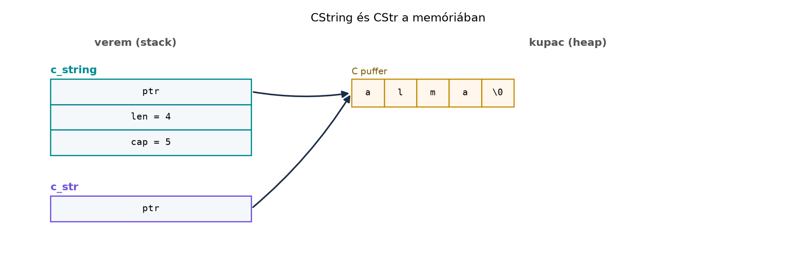

Egy évtizedes C++-kódbázis ritkán cserélhető le egyik napról a
másikra Rustra. A gyakorlatban a két nyelv ugyanabban a folyamatban él:
meglévő C vagy C++ könyvtárat hívunk Rustból, vagy egy új Rust
komponenst teszünk elérhetővé a régi C++ kliens számára. A közös nevező
a C ABI: a C függvényhívási konvenció, a C adatszerkezetek és a C
stringek. A Rust nem beszéli a C++ osztályok, túlterhelt függvények,
kivételek vagy sablonok nyelvét, de a C ABI-n keresztül bármilyen C++
kód elérhető, ha extern "C" függvényekbe csomagoljuk.
Az rkv mintaprojektben most azt a hidat építjük meg, amelyen a
későbbi C++ kliens átkelhet: az rkv-ffi crate egy C API-t
exportál, amelyet a C++-együttműködés a cxx
crate-tel és a fokozatos migráció alfejezet használ tovább, a
záróprojektben pedig a teljes rendszer része lesz.
Definíció. Az ABI (application binary
interface) az a bináris szerződés, amely meghatározza, hogyan adjuk át
az argumentumokat, hogyan rendezzük a struktúrákat, és hogyan nevezzük a
szimbólumokat. A Rust alapértelmezett ABI-ja nem stabil, ezért C-vel
való együttműködésnél mindig explicit extern "C" blokkot
használunk.
Definíció. A #[repr(C)] attribútum
C-kompatibilis memóriaelrendezést ad a Rust típusoknak: a mezők
sorrendje megegyezik a deklaráció sorrendjével, nincs újrarendezés, és a
padding a C szabályait követi. A #[repr(Rust)] (az
alapértelmezett) esetén a fordító szabadon átrendezheti a mezőket, ezért
C-nek átadott struktúrákhoz mindig #[repr(C)] kell.
Szabály. A Rust referencia (&T,
&mut T) nem C-kompatibilis típus; C-ből nyers mutatók
jönnek (*const T, *mut T). A C ABI határán
mindig nyers mutatókat használunk, és a hívóval egyértelműen
megállapodunk az ownership átadásáról.
Szabály. A pánik nem léphet át a C határon. A Rust
panic! egy extern "C" függvényből kilépve
abort-hoz vagy undefined behaviorhez vezethet; ezért minden
C-be exportált függvényben catch_unwind-del kell védeni a
Rust kódot.
Szabály. A #[no_mangle] attribútum
megakadályozza a szimbólum átnevezését, így a függvény neve a C linker
számára látható marad. A Rust 2024-es editionben ez az attribútum az
unsafe attribútumok közé került, ezért #[unsafe(no_mangle)]
formában kell írni; a 2021-es editionben a #[no_mangle]
továbbra is működik. (Ellenőrzési igény: a pontos szintaxis a
telepített toolchain verziójától függ.)
Egy meglévő C könyvtár legegyszerűbb hívása kézzel írt
extern blokkal történik:
// mylib.h
int add(int a, int b);// Kézzel írt kötés
extern "C" {
fn add(a: i32, b: i32) -> i32;
}
fn main() {
// SAFETY: a C függvénynek nincs előfeltétele, és a hívás nem sért Rust-invariánst.
let sum = unsafe { add(2, 3) };
println!("{sum}");
}A linkeléshez a build.rs-ben meg kell adni a könyvtárat:
println!("cargo:rustc-link-lib=mylib");. Nagyobb C
fejléchez azonban a kézi fordítás hibalehetőség; erre való a
bindgen, amely a C fejlécből generálja a Rust kötést.
// build.rs
fn main() {
println!("cargo:rustc-link-lib=mylib");
println!("cargo:rerun-if-changed=wrapper.h");
let bindings = bindgen::Builder::default()
.header("wrapper.h")
.generate()
.expect("bindgen hiba");
bindings
.write_to_file("src/bindings.rs")
.expect("bindings írása nem sikerült");
}A generált bindings.rs-t a forrásban
include!("bindings.rs"); módon illesztjük be. A bindgen
által generált függvények unsafe extern "C" blokkba
kerülnek, mert a Rust nem tudja ellenőrizni a C oldal biztonságát. A C++
fejlesztő számára ez ismerős: a extern "C" a C++-ban is a
névmanipuláció kikapcsolását jelenti, de ott a hívás biztonságáért a
programozó felel, míg a Rust ezt az unsafe kulcsszóval
teszi explicitté.
A C string null-terminált bájtsorozat; a Rust String
heap-en allokált, hossz- és kapacitásmezőkkel ellátott UTF-8 puffert. A
kettő között a std::ffi modul típusai konvertálnak:
CStr: kölcsönzött C string, mint a
&str, de bájt-alapú és null-terminált.CString: birtokolt C string, mint a
String, de null-terminált, és nem tartalmazhat belső null
bájtot.
A CStr::from_ptr unsafe függvény, mert a mutatónak
érvényes, null-terminált stringre kell mutatnia. A
CString::new ellenőrzi, hogy nincs-e belső null bájt, és
NulError-t ad vissza, ha van. A C++-ban a
std::string::c_str() automatikusan null-terminált mutatót
ad; a Rustban ezt explicit konverzióval és hibakezeléssel kell
megtenni.
#include <string>
extern "C" void c_library_set(const char* key, const char* value, size_t value_len);
void set_value(const std::string& key, const std::string& value) {
c_library_set(key.c_str(), value.data(), value.size());
}use std::ffi::CString;
use std::os::raw::c_char;
extern "C" {
fn c_library_set(key: *const c_char, value: *const c_char, value_len: usize);
}
fn set_value(key: &str, value: &str) -> Result<(), std::ffi::NulError> {
let key = CString::new(key)?;
let value = CString::new(value)?;
// SAFETY: a CString érvényes, null-terminált puffert ad, és a hívás alatt él.
unsafe {
c_library_set(key.as_ptr(), value.as_ptr(), value.as_bytes().len());
}
Ok(())
}A különbség: a C++ automatikusan kezeli a null-terminálást, de a
Rustban a CString explicit, és a belső null bájt hibát
okoz. Bináris adatoknál (mint az rkv Vec<u8> értékei)
ezért nem null-terminált stringet, hanem mutató + hossz párt adunk át,
és a Rust oldalon std::slice::from_raw_parts-szel
rekonstruáljuk a slice-ot.
A C ABI-n nincs Rust tulajdonjog: a hívó és a hívott közötti megállapodás határozza meg, ki szabadít fel. A leggyakoribb minták:
Box::into_raw a Rust oldalon, a C oldalon egy dedikált
felszabadító függvény hívása.CString::from_raw-val veszi át, és a CString
drop-ja felszabadítja a Rust allokátorral létrehozott memóriát.Fontos csapda: a CString::from_raw csak
olyan mutatót fogadhat, amelyet a CString::into_raw hozott
létre. Ha a C kód malloc-kal allokált mutatót ad át, és a
Rust CString::from_raw-t hív rá, az undefined behavior. A
C-ből érkező mutatót a Rust oldalon CStr::from_ptr-ként
kezeljük, és nem szabadítjuk fel, kivéve ha a szerződés szerint a Rust-é
a felszabadítás.
A Box::into_raw elveszi a Rust Box-ot, és
visszaadja a nyers mutatót; a memória felszabadításához
Box::from_raw kell. Ez a minta biztosítja, hogy a Rust
allocator párosuljon a Rust deallokátorral.
A Rust pánik nem hagyhatja el a extern "C" függvényt. A
catch_unwind elfogja a pánikot, és hibakódot adunk vissza.
A visszatérési érték tipikusan c_int: 0 a
siker, 1 az általános hiba, 2 a pánik. A C
hívó így tudja kezelni a hibát anélkül, hogy a Rust futásidő
megszakadna.
use std::panic::{catch_unwind, AssertUnwindSafe};
fn rust_code_can_panic() -> Result<(), rkv_core::Error> {
// ...
Ok(())
}
fn call_with_panic_guard() -> c_int {
let result = catch_unwind(AssertUnwindSafe(rust_code_can_panic));
match result {
Ok(Ok(())) => 0,
Ok(Err(_)) => 1,
Err(_) => 2,
}
}A catch_unwind feltételezi, hogy a profilban a pánik nem
abort; C ABI határán ezért általában
panic = "unwind" beállítást használunk. A pánik elkapása
nem helyettesíti a hibakezelést, de megvédi a C hívót a Rust futásidő
váratlan leállásától.
Munkakönyvtár: ~/rust-labor/rkv/
Ebben a laborban létrehozzuk az rkv-ffi crate-et, amely
C API-t exportál az rkv-core MemStore
implementációjához, cbindgen-nel generáljuk a C headert, és
egy C klienst fordítunk rá.
rkv-ffi crate-et:cd ~/rust-labor/rkv
cargo new --lib rkv-ffiCargo.toml members listája még nem tartalmazza
automatikusan):# rkv/Cargo.toml (részlet)
[workspace]
members = ["rkv-core", "rkv-cli", "rkv-server", "rkv-ffi"]rkv-ffi/Cargo.toml-t:[package]
name = "rkv-ffi"
version = "0.1.0"
edition = "2024"
[lib]
crate-type = ["cdylib", "staticlib"]
[dependencies]
rkv-core = { path = "../rkv-core" }A cdylib dinamikus C könyvtárat, a
staticlib statikus könyvtárat állít elő; így a C kliens
mindkét formában linkelhet.
src/lib.rs-t:use rkv_core::{Error, MemStore, Storage};
use std::ffi::{CStr, CString};
use std::os::raw::{c_char, c_int};
use std::panic::{catch_unwind, AssertUnwindSafe};
use std::ptr;
const OK: c_int = 0;
const ERR_GENERAL: c_int = 1;
const ERR_PANIC: c_int = 2;
#[unsafe(no_mangle)]
pub extern "C" fn rkv_store_new() -> *mut MemStore {
Box::into_raw(Box::new(MemStore::new()))
}
#[unsafe(no_mangle)]
pub unsafe extern "C" fn rkv_store_free(store: *mut MemStore) {
if store.is_null() {
return;
}
// SAFETY: a hívó a rkv_store_new által adott mutatót adja át, és nem használja utána.
unsafe {
drop(Box::from_raw(store));
}
}
#[unsafe(no_mangle)]
pub unsafe extern "C" fn rkv_set(
store: *mut MemStore,
key: *const c_char,
value: *const c_char,
value_len: usize,
) -> c_int {
if store.is_null() || key.is_null() || value.is_null() {
return ERR_GENERAL;
}
let result = catch_unwind(AssertUnwindSafe(|| {
// SAFETY: a hívó érvényes, null-terminált C stringet ad át.
let key = unsafe { CStr::from_ptr(key) }
.to_str()
.map_err(|_| Error::InvalidCommand("nem UTF-8 kulcs".into()))?;
// SAFETY: a hívó legalább value_len bájtot garantál a value mutató mögött.
let value = unsafe { std::slice::from_raw_parts(value as *const u8, value_len) }.to_vec();
// SAFETY: a store mutató a rkv_store_new-ból származik, és érvényes.
unsafe { &mut *store }.set(key.to_string(), value)
}));
match result {
Ok(Ok(())) => OK,
Ok(Err(_)) => ERR_GENERAL,
Err(_) => ERR_PANIC,
}
}
#[unsafe(no_mangle)]
pub unsafe extern "C" fn rkv_get(store: *const MemStore, key: *const c_char) -> *mut c_char {
if store.is_null() || key.is_null() {
return ptr::null_mut();
}
let result = catch_unwind(AssertUnwindSafe(|| {
// SAFETY: a hívó érvényes, null-terminált C stringet ad át.
let key = unsafe { CStr::from_ptr(key) }
.to_str()
.map_err(|_| Error::InvalidCommand("nem UTF-8 kulcs".into()))?;
// SAFETY: a store mutató a rkv_store_new-ból származik, és érvényes.
unsafe { &*store }.get(key)
}));
match result {
Ok(Ok(Some(value))) => match CString::new(value) {
Ok(s) => s.into_raw(),
Err(_) => ptr::null_mut(),
},
Ok(Ok(None)) => ptr::null_mut(),
Ok(Err(_)) => ptr::null_mut(),
Err(_) => ptr::null_mut(),
}
}
#[unsafe(no_mangle)]
pub unsafe extern "C" fn rkv_string_free(ptr: *mut c_char) {
if ptr.is_null() {
return;
}
// SAFETY: a hívó a rkv_get által visszaadott mutatót adja át, és nem használja utána.
unsafe {
drop(CString::from_raw(ptr));
}
}A MemStore és a Storage trait metódusai a
korábbi fejezetekben rögzített szignatúrájúak; ha a pontos név vagy
visszatérési típus eltér, a laborban igazítani kell. A
CString::new(value) a Vec<u8>-ból készít
C stringet; ha az érték belső null bájtot tartalmaz, a get
null mutatót ad vissza. A termelési kódban ezért gyakran mutató + hossz
kimeneti paramétereket használunk.
cbindgen.toml-t az
rkv-ffi könyvtárban:language = "C"
include_guard = "RKV_FFI_H"cargo install cbindgen
cd ~/rust-labor/rkv/rkv-ffi
cbindgen --config cbindgen.toml --crate rkv-ffi --output rkv_ffi.hA generált rkv_ffi.h deklarálja a MemStore
opaque típust (mivel a Rust MemStore nem
#[repr(C)], a cbindgen csak előre deklarálja), és a
rkv_store_new, rkv_store_free,
rkv_set, rkv_get, rkv_string_free
függvényeket.
cd ~/rust-labor/rkv
cargo build --release -p rkv-ffi~/rust-labor/rkv/cpp-client/ könyvtárba (a
rkv_ffi.h másolása után):#include "rkv_ffi.h"
#include <stdio.h>
int main(void) {
MemStore *store = rkv_store_new();
if (rkv_set(store, "alma", "piros", 5) != 0) {
fprintf(stderr, "SET hiba\n");
return 1;
}
char *value = rkv_get(store, "alma");
if (value) {
printf("VALUE %s\n", value);
rkv_string_free(value);
} else {
printf("NOTFOUND\n");
}
rkv_store_free(store);
return 0;
}cd ~/rust-labor/rkv/cpp-client
cc -I. -L../target/release -lrkv_ffi -o rkv-c-client main.c
LD_LIBRARY_PATH=../target/release ./rkv-c-clientVárt kimenet:
VALUE pirosA cpp-client későbbi C++ kódja ugyanezt a headert
használja, csak .cpp kiterjesztéssel és C++ fordítóval.
String átadása C-nek. A
String belső elrendezése nem C-kompatibilis; közvetlenül
soha ne adjuk át. Mindig CString-et és
into_raw-t vagy as_ptr-t használjunk.rkv_get által visszaadott mutatót a C hívónak kell
felszabadítania a rkv_string_free-vel. Ha ezt elmulasztja,
memóriaszivárgás; ha kétszer hívja, double free.rkv_get
catch_unwind nélkül, ha a Rust kód pánikol, a folyamat
abortálhat vagy undefined behavior. Minden C-be exportált függvényben
használjunk catch_unwind-öt.CString::from_raw rossz mutatóra. A
rkv_string_free csak olyan mutatót fogadhat, amelyet a
CString::into_raw hozott létre. Ha a C kód
malloc-kal allokált mutatót ad át, az undefined
behavior.#[repr(C)] struktúra átadása
C-nek. Az rkv-ffi-ben a MemStore
opaque típus, ezért nem kell #[repr(C)], de ha a C kód
hozzáfér a mezőkhöz, akkor kötelező.&str-et közvetlenül C függvénynek átadni? Milyen típust
használunk helyette, és miért?std::string-et fogad, és egy C könyvtárnak adja át
char*-ként. Írja meg a Rust megfelelőjét, amely
CString-et használ és into_raw-val adja át, ha
a C könyvtár tárolja a mutatót.rkv-ffi crate-et egy rkv_delete függvénnyel,
amely törli a kulcsot a MemStore-ból, és hibakódot ad
vissza. Generálja újra a headert, és tesztelje a C kliensből.rkv_get jelenleg
null mutatót ad vissza, ha a kulcs nincs meg vagy hiba történt. Hogyan
lehetne megkülönböztetni a két esetet? Tervezzen egy
rkv_get_ex függvényt, amely kimeneti paraméterben adja
vissza a hibakódot, és indokolja a választást.&str nem null-terminált, és fat pointer
(adatmutató + hossz). A C egy char*-ot vár, null-terminált
bájtsorozatot. A CString biztosítja a null-terminált,
birtokolt puffert; a &CStr a kölcsönzött nézetet.std::string s = "alma"; c_library_set_takes_ownership(strdup(s.c_str()));
— itt a hívó ad át tulajdonjogot. Rust oldal:use std::ffi::CString;
use std::os::raw::c_char;
extern "C" {
fn c_library_set_takes_ownership(key: *mut c_char);
}
fn set_value(key: &str) -> Result<(), std::ffi::NulError> {
let key = CString::new(key)?;
// SAFETY: a CString.into_raw átadja a tulajdonjogot; a C könyvtár felszabadítja.
unsafe { c_library_set_takes_ownership(key.into_raw()) };
Ok(())
}rkv_delete implementációja:#[unsafe(no_mangle)]
pub unsafe extern "C" fn rkv_delete(store: *mut MemStore, key: *const c_char) -> c_int {
if store.is_null() || key.is_null() {
return ERR_GENERAL;
}
let result = catch_unwind(AssertUnwindSafe(|| {
// SAFETY: a hívó érvényes, null-terminált C stringet ad át.
let key = unsafe { CStr::from_ptr(key) }
.to_str()
.map_err(|_| Error::InvalidCommand("nem UTF-8 kulcs".into()))?;
// SAFETY: a store mutató a rkv_store_new-ból származik, és érvényes.
unsafe { &mut *store }.delete(key)
}));
match result {
Ok(Ok(())) => OK,
Ok(Err(_)) => ERR_GENERAL,
Err(_) => ERR_PANIC,
}
}A headert újra kell generálni, és a C kliensben hívni.
rkv_get_ex tervezése: a függvény
c_int-et ad vissza, és a kimeneti értéket egy
char** és size_t* paraméterben adja vissza. A
hívó ellenőrzi a visszatérési kódot, és ha az OK, akkor a
kimeneti mutatót és hosszt használja. Ez lehetővé teszi a hibakód és az
érték egyértelmű szétválasztását, bár a hívónak kell felszabadítania a
puffert. A mutató + hossz minta a C ABI: extern “C”,
repr(C), bindgen és cbindgen alfejezetben bemutatott elvet
követi.A C ABI a Rust és C/C++ együttműködés alapja. A Rust
extern "C" blokkokkal hív C függvényeket, amelyeket a
bindgen generálhat C fejlécekből; a
#[unsafe(no_mangle)] (2024 editionben) és a
pub extern "C" fn exportálja a Rust függvényeket C számára.
A #[repr(C)] attribútum C-kompatibilis elrendezést ad a
struktúráknak. A stringeknél a CStr és CString
típusok biztosítják a null-terminált konverziót; bináris adatoknál
mutató + hossz szerződést használunk. Az ownership a határon:
Box::into_raw és Box::from_raw a Rust
allokáció átadásához; a C-ből érkező mutatót soha nem szabadítjuk fel,
hacsak a szerződés nem mondja ki. A pánikot
catch_unwind-del fogjuk el, és hibakódot adunk vissza. A
laborban létrehoztuk az rkv-ffi crate-et
cdylib és staticlib típusokkal, a
rkv_store_new, rkv_store_free,
rkv_set, rkv_get, rkv_string_free
exportált függvényekkel, cbindgen-nel generáltuk az
rkv_ffi.h headert, és C klienst fordítottunk rá.
Továbbvitt eredmény: ez a C API az alapja a C++-együttműködés a cxx crate-tel és a fokozatos
migráció és a Záróprojekt: az rkv teljes
rendszerként alfejezeteknek.
std::ffi::CStr/CString,
Box::into_raw/from_raw,
catch_unwind a standard könyvtár stabil API-i.bindgen és cbindgen eszközök aktuális
verzióit és pontos parancssori opcióit a docs.rs-en és a hivatalos
GitHub-oldalakon ellenőrizni kell. A példák a bindgen 0.69+ és cbindgen
0.26+ főverziókra épülnek.unsafe attribútumok
szintaxisa (#[unsafe(no_mangle)]) a Rust 1.82-től stabil; a
2021-es editionben a #[no_mangle] továbbra is működik, de a
2024-es editionben az unsafe jelölés kötelező. Ezt a
telepített toolchainen ellenőrizni kell.MemStore és a Storage trait pontos
metódus-szignatúrái az rkv-core korábbi fejezeteiben
rögzítettek; a laborban használt set, get,
delete feltételezi a
Result<..., rkv_core::Error> visszatérést.